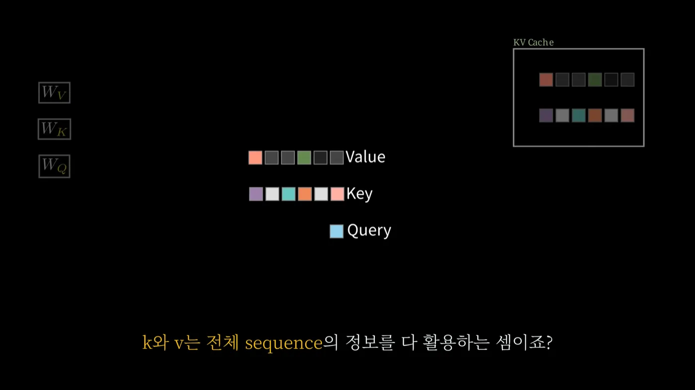
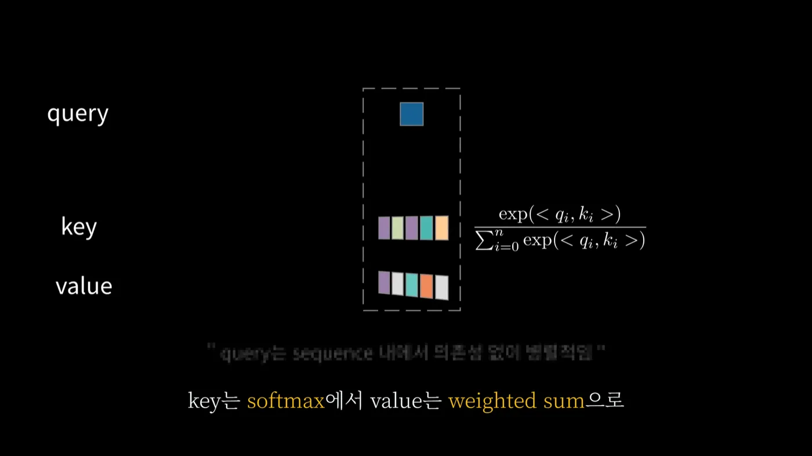
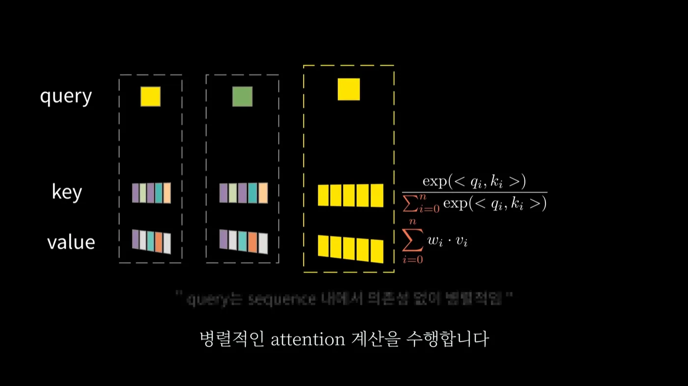
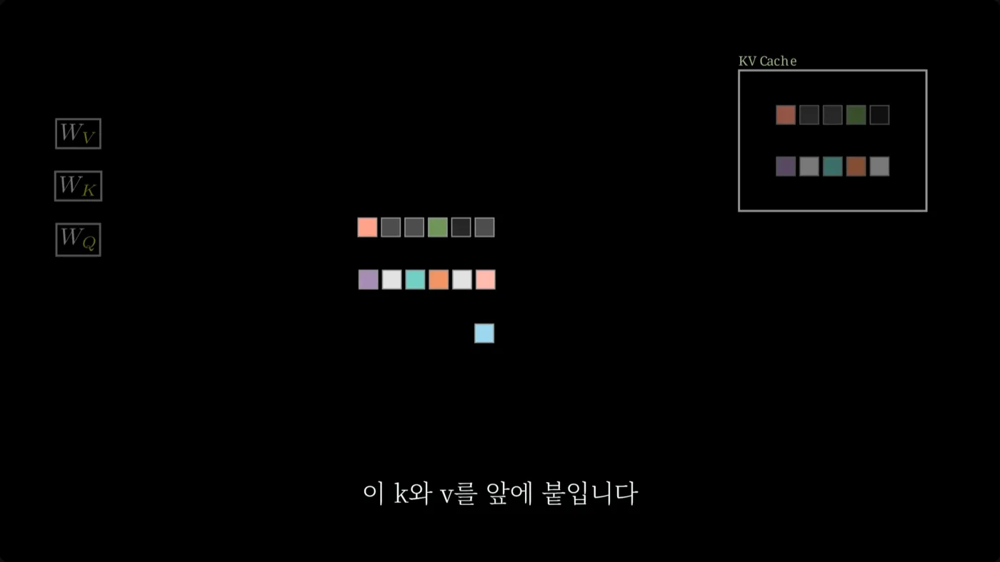
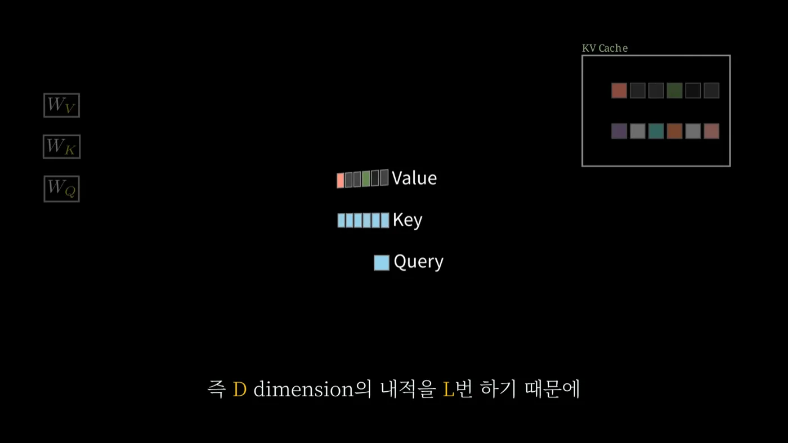
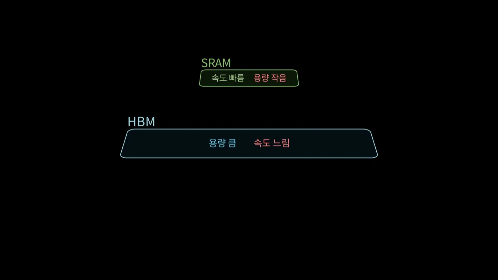
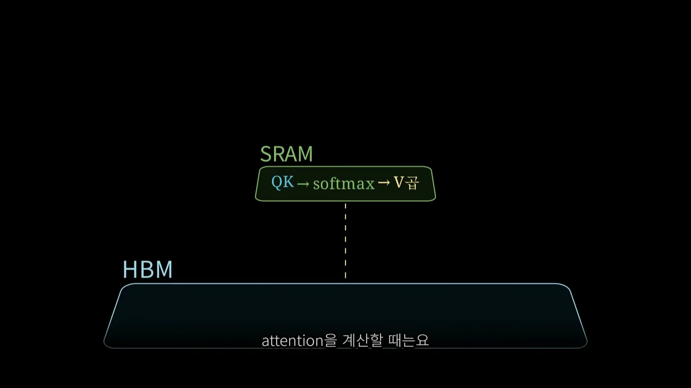

llm
4편. 서빙에서 어텐션 비용 줄이기 - KV Cache와 prefill과 Flash Attention
토큰 하나 뽑을 때마다 반복되는 어텐션 계산을 KV Cache로 없애고, 첫 계산을 prefill로 나누고, Flash Attention으로 메모리 이동을 줄이는 방법
2026.08.09 · 25 min read
1편에서 문장이 768차원 벡터가 됐고, 2편에서 그 벡터들이 서로를 참조해 문맥 벡터가 됐고, 3편에서 그 결과가 다음 토큰의 확률이 됐습니다. 여기까지가 토큰 하나입니다.
응답 하나를 만들려면 이 전 과정을 토큰 개수만큼 반복해야 합니다. 200 토큰짜리 답변이면 200번입니다. 게다가 반복할 때마다 입력이 한 칸씩 길어지니, 어텐션이 계산해야 할 토큰 쌍은 1편 2.4절에서 본 그 n²을 따라 계속 불어납니다. 컨텍스트 한도가 "설계상의 상한"이 아니라 "감당 가능한 선"이라고 했던 그 문제가, 서빙에서는 응답 속도와 GPU 대수로 바로 환산됩니다.
이 문제를 실제로 다루는 방법 세 가지를 정리했습니다. KV Cache는 이미 한 계산을 다시 하지 않고, prefill은 피할 수 없는 첫 계산을 미리 하거나 잘게 나누고, Flash Attention은 같은 계산을 하면서 메모리를 덜 오갑니다. 별다른 언급이 없으면 GPT-2 small 기준입니다.
1부. KV Cache
1.1 캐시가 푸는 문제
캐시(cache)는 이미 계산한 걸 또 쓰려고 저장해두는 것입니다. 재활용을 위한 저장이고, 성립하려면 조건이 두 개 붙습니다.
- 같은 값을 다시 쓴다
- 한 번 쓰고 버릴 값이면 저장할 이유가 없습니다.
- 그 값이 그사이 변하지 않는다
- 변하면 저장해둔 값이 틀린 값이 됩니다.
KV Cache는 어텐션의 Key와 Value를 재활용하려고 저장하는 것입니다. 두 조건은 GPT가 문장을 만드는 방식에서 나옵니다.
GPT는 토큰을 한 번에 하나씩 만들고, 만든 토큰을 입력 뒤에 붙여 다시 넣습니다.
1회차 입력 [Data][visualization][em][powers][users][to] → [visualize]
2회차 입력 [Data][visualization][em][powers][users][to][visualize] → [the]
3회차 입력 [Data][visualization][em][powers][users][to][visualize][the] → [data]
2회차 입력의 앞 6칸은 1회차 입력과 글자 하나 다르지 않습니다. 3회차의 앞 7칸도 2회차와 같고요. 매 회차마다 입력의 거의 전부가 직전 회차와 동일합니다. 첫 번째 조건이 이렇게 채워집니다.
두 번째 조건은 2편 3.2절에서 이미 확보해뒀습니다. 마스킹 때문에 어텐션 점수 행렬은 왼쪽 아래만 남은 계단 모양이고, 각 토큰은 자기와 그 앞만 봅니다. 뒤에 새 토큰이 붙어도 앞쪽 토큰은 그 토큰을 볼 수 없으니, 앞쪽 토큰의 K와 V는 나중에도 변하지 않습니다. 계단 모양이 캐싱의 전제입니다.
1.2 KV Cache 없이 생성하면 - 매번 L²·D
캐시가 없으면 매 회차가 어떻게 도는지 먼저 보겠습니다. 시퀀스 길이를 L, 임베딩 차원을 D라고 하겠습니다.
입력 L개 토큰
↓ × 묶인 QKV 가중치
Q L개, K L개, V L개
↓ Q · K 내적
L × L 어텐션 점수 행렬
↓ 스케일링 · 마스킹 · Softmax · V곱
L개의 문맥 벡터
↓
그중 마지막 하나로 다음 토큰 예측
어텐션에서 계산 부담이 가장 큰 지점은 Q와 K의 내적입니다. 쿼리가 L개, 키가 L개니 쌍이 L × L개고, 쌍 하나마다 D차원짜리 내적을 합니다. 곱셈 횟수는 L² · D가 됩니다.
L의 제곱이라는 게 부담스러운데, L은 시퀀스 길이라서 줄이기가 어렵습니다. 사용자가 넣은 문장 길이와 지금까지 생성한 길이의 합이니 모델이 마음대로 깎을 수 있는 값이 아닙니다.
GPT-2 small의 컨텍스트를 가득 채운 경우로 숫자를 넣어보겠습니다.
L = 1,024 D = 768 블록 12개
L² · D = 1,024 × 1,024 × 768 ≈ 8억 (블록 하나의 Q·K 내적)
× 12 ≈ 97억 (블록 12개)
Softmax도 V곱도 MLP도 빼고, Q·K 내적만 세서 약 97억 번입니다. 그리고 이 계산을 다 하고 나서 얻는 건 토큰 하나입니다.
여기가 중복의 정체입니다. L개의 쿼리 중 이번 회차에 처음 등장한 건 마지막 하나뿐입니다. 나머지 L-1개 쿼리의 어텐션은 직전 회차에서 이미 계산했고, 마스킹 덕분에 지금 다시 계산해도 값이 똑같습니다. 그런데 그 결과를 쓰지도 않습니다. 다음 토큰의 확률은 마지막 자리의 출력 하나에서만 나오니까요.
왜 중요한가 - 줄일 여지가 어디 있는지가 여기서 정해집니다. 어텐션 계산이 본질적으로 비싼 게 아니라, 매번 전부 다시 하고 있다는 것이 비쌉니다. 계산의 정의를 바꾸지 않고도 손댈 수 있다는 뜻입니다.
1.3 무엇을 저장하는가
맨 처음 생성은 그대로 진행합니다. L개 토큰을 전부 넣고, Q·K·V를 전부 만들고, L² · D를 치릅니다. 대신 그 과정에서 나온 값을 그냥 버리지 않습니다.
각 토큰의 Key 벡터와 Value 벡터를 상자에 담아둡니다. 이 상자가 KV Cache입니다.
- 저장한다 - K 벡터 L개, V 벡터 L개
- 저장하지 않는다 - Q 벡터
Q를 저장하지 않는 이유는 다음 회차에 필요한 쿼리가 무엇인지 보면 나옵니다. 2회차에서 새로 계산해야 할 어텐션은 방금 생성된 토큰의 쿼리 하나에 대한 것뿐입니다. 이전 쿼리들은 다시 쓸 일이 없습니다. 반대로 K와 V는 그 하나짜리 쿼리가 전부 다 참조해야 하는 재료라 전부 필요합니다.

k와 v는 전체 sequence의 정보를 다 활용하는 셈이죠?가 이 비대칭의 이유입니다. (출처: 임커밋, KV Cache 시각화로 설명 06:22)같은 어텐션 안에서 Q와 K·V의 처지가 이렇게 갈리는 게 KV Cache의 전부입니다. 그 비대칭이 왜 생기는지가 다음 절입니다.
1.4 성립하는 이유 - 쿼리의 독립성
이 절이 KV Cache에서 제일 헷갈리는 대목을 푸는 자리입니다. 질문은 이겁니다. 토큰 하나만 입력으로 넣으면, 나머지 토큰들의 어텐션은 어떻게 되는 건가?
먼저 어텐션 안에서 Q와 K·V가 어떻게 다른지부터 봐야 합니다.
K와 V는 서로 영향을 줍니다.
- Softmax를 통해 - 한 쿼리에 대한 키들의 점수를 exp 취해 총합으로 나눕니다. 키가 하나 늘면 분모가 바뀌고, 다른 키의 가중치도 전부 바뀝니다.
- Weighted sum을 통해 - Value들은 가중치를 달고 더해져서 하나의 출력이 됩니다. 하나가 바뀌면 결과가 바뀝니다.

key는 softmax에서 value는 weighted sum으로가 그 얽힘의 두 경로입니다. (출처: 임커밋, KV Cache 시각화로 설명 01:53)Q는 그렇지 않습니다. 한 시퀀스 안에서 각 쿼리는 개별적으로, 병렬로 자기 어텐션을 수행합니다. 쿼리가 하나 더 늘어난다고 해서 다른 쿼리의 어텐션 결과가 달라지지 않습니다.

query는 sequence 내에서 의존성 없이 병렬적이라, 쿼리가 하나 늘어도 기존 쿼리의 결과는 그대로입니다. 반대로 각 상자 안의 키·값들은 하나의 수식으로 묶여 서로 영향을 줍니다. (출처: 임커밋, KV Cache 시각화로 설명 02:01)어텐션 점수 행렬로 보면 명확합니다. 2편 3.1절에서 만든 그 L × L 행렬에서 행은 쿼리, 열은 키입니다.
키 (열) →
t1 t2 t3 t4
쿼리 t1 ■ · · · ← 새 열 t4 가 생겨도 마스킹돼 들어오지 않음
(행) t2 ■ ■ · ·
t3 ■ ■ ■ ·
t4 ■ ■ ■ ■ ← 새로 추가된 행. 계산이 필요한 건 여기뿐
행끼리는 섞이지 않는다 Softmax도 행 단위로 따로 걸린다
열끼리는 섞인다 한 행 안에서 총합으로 나누기 때문
토큰 t4가 새로 붙으면 행이 하나 늘고 열도 하나 늡니다. 늘어난 행 t4는 t1t4 전부를 봐야 하니 계산이 필요합니다. 늘어난 열 t4는 위쪽 행들에서 전부 마스킹되어 0이 됩니다. 그래서 t1t3 행의 Softmax 분모는 t4가 붙기 전과 똑같고, 결과값도 똑같습니다.
정리하면 이렇습니다.
현재 상태 매 회차마다 쿼리 L개 × 키 L개 를 전부 다시 계산
↓
목표 상태 이번에 늘어난 쿼리 1개 × 키 L개 만 계산
한 문장으로 줄이면, 행은 서로 독립이라 새 행 하나만 계산하면 되고, 그 행이 참조할 열은 이미 다 만들어져 있다는 것입니다.
- 무엇을 하는가 - 직전 회차에서 만든 K·V를 그대로 꺼내 쓰고, 새 토큰 몫의 K·V 한 벌만 새로 만들어 뒤에 붙인다
- 왜 되는가 - 쿼리끼리 독립이라 이전 행을 다시 계산할 필요가 없고, 마스킹 때문에 이전 행의 값이 바뀌지도 않는다
캐시 이름이 "KV Cache"인 것도 여기서 설명됩니다. 재사용되는 건 참조당하는 쪽(K·V) 이고, 참조하는 쪽(Q)은 매번 새 것 하나만 있으면 됩니다.
1.5 L²·D 에서 L·D 로
두 번째 생성부터는 모델에 들어가는 입력 자체가 달라집니다. 기존에는 지금까지의 모든 토큰을 넣었는데, 이제는 조금 전에 생성한 마지막 토큰 하나만 넣습니다.
입력이 하나면 Wq, Wk, Wv를 통과한 결과도 그 토큰 하나 몫만 나옵니다. 여기에 캐시가 붙습니다.
입력 [visualize] ← 마지막 토큰 1개
↓ × Wq, Wk, Wv
q 1개, k 1개, v 1개
↓ 캐시에서 꺼낸 K·V 뒤에 이어 붙이기
Q 1개
K [ 캐시된 L-1개 ][ 새 1개 ] = L개
V [ 캐시된 L-1개 ][ 새 1개 ] = L개
↓ 이어 붙인 K·V 를 다시 캐시에 저장 (다음 회차용)
↓ Q · K 내적 → Softmax → × V
문맥 벡터 1개 → 다음 토큰

이 k와 v를 앞에 붙입니다. 이렇게 이어 붙인 K·V를 다시 상자에 넣어 다음 회차에 씁니다. 아래 파란 칸 하나가 이번 회차의 Query 전부고요. (출처: 임커밋, KV Cache 시각화로 설명 06:15)q는 마지막 샘플의 정보뿐이지만, k와 v는 전체 시퀀스의 정보를 다 활용합니다. 계산 절차 자체는 2편에서 본 것과 하나도 다르지 않습니다. 단일 쿼리에 대해 키들과 내적해 가중치를 구하고, 그 가중치로 Value들을 가중합할 뿐입니다.

W_Q · W_K · W_V는 흐려져 있는데, 이번 회차에 이 가중치들을 통과하는 토큰이 하나뿐이라 부담이 없다는 뜻입니다. 오른쪽 위 상자에 담긴 K·V가 직전 회차에서 저장해둔 값이고요. 자막의 D dimension의 내적을 L번이 그대로 L · D입니다. (출처: 임커밋, KV Cache 시각화로 설명 07:49)복잡도를 다시 세보겠습니다. 쿼리가 1개, 키가 L개, 쌍 하나마다 D차원 내적이니 1 × L × D, 즉 L · D 입니다.
KV Cache 없음 KV Cache 있음
입력 전체 L 토큰 마지막 1 토큰
Q L개 1개
K, V L개씩 새로 계산 캐시 L-1개 + 새로 1개
Q · K 쌍 L × L 1 × L
복잡도 L² · D L · D
L이 1,024면 회차당 계산이 1,024분의 1로 줄어듭니다. 앞에서 센 97억 번이 950만 번쯤 됩니다.
공짜는 아닙니다. 계산을 메모리로 바꾼 것입니다. 1편 3.5절에서 예고했던 공식이 여기서 실물이 됩니다.
KV Cache 크기 ∝ 레이어 수 × 토큰 수 × 임베딩 차원 × 2 (K와 V)
GPT-2 small, 컨텍스트를 가득 채운 경우
12 × 1,024 × 768 × 2 = 18,874,368개 값
fp16(값 하나당 2바이트)이면 약 36MB
이건 시퀀스 하나당 크기입니다. 동시 접속자가 100명이면 3.6GB, 1,000명이면 36GB가 어텐션 캐시로만 나갑니다. 여기에 모델 가중치도 GPU에 올라가 있어야 하고요. "이 모델을 이 GPU에 몇 명이나 붙일 수 있나"라는 질문이 결국 임베딩 차원 768에서 시작한다고 했던 게 이 얘기입니다.
왜 중요한가 - 요즘 모델의 컨텍스트가 수십만 토큰까지 늘어난 배경에도 이 식이 있습니다. 토큰 수에 정비례하는 항이라, 컨텍스트를 10배 늘리면 사용자 한 명이 쓰는 GPU 메모리도 10배가 됩니다. 긴 컨텍스트가 비싼 이유는 계산량만이 아닙니다.
2부. Prefill - 첫 계산의 부담 덜기
2.1 최초 1회는 피할 수 없다
1부의 이야기는 전부 "캐시에 이미 K·V가 들어 있다" 를 전제로 합니다. 그 K·V를 처음 만드는 계산은 아무도 대신해주지 않습니다.
KV Cache를 쓰려고 해도 최초 1번은 O(L² · D) 계산을 그대로 해야 합니다. 그리고 이때의 L은 사용자가 넣은 프롬프트 전체 길이라 짧지 않습니다. 문서를 통째로 붙여넣는 요청이면 수천 토큰이고, 그 제곱입니다.
LLM을 서비스하는 입장에서 요청 하나가 처리되는 순서를 보겠습니다.
1) 사용자가 프롬프트를 입력한다
2) 이를 System Prompt 뒤에 붙인다
3) model inference 를 계속 반복한다
4) 결과를 응답한다
3번의 "반복"이 1부에서 본 L · D짜리 생성 루프입니다. 그런데 3번에 들어가려면 2번까지의 시퀀스 전체에 대한 K·V가 먼저 있어야 합니다. 2번과 3번 사이에 있는 그 최초 1회가 사용자 눈에는 "아직 아무 글자도 안 나오는 시간" 입니다.
2.2 시스템 프롬프트는 미리 알 수 있다
여기서 눈여겨볼 게 시스템 프롬프트입니다.
시스템 프롬프트는 사용자 입력을 받기 전부터 이미 알고 있는 시퀀스입니다. 서비스가 정해둔 고정 문구라 요청이 오기 전에도 내용이 확정돼 있습니다.
그러면 요청을 기다릴 이유가 없습니다. 미리 계산해서 KV Cache에 넣어두면 됩니다. prefill은 KV Cache를 미리 채워두는 방법입니다.
prefill 없음
요청 도착 ─┬─ [ 시스템 프롬프트 S토큰 ][ 사용자 입력 U토큰 ] 전체를 지금 계산
└─ 쿼리 (S+U)개 × 키 (S+U)개
prefill 있음
요청 도착 전 ─── [ 시스템 프롬프트 S토큰 ] 미리 계산해 KV Cache 에 적재
요청 도착 ─┬─ [ 사용자 입력 U토큰 ] 만 계산
└─ 쿼리 U개 × 키 (S+U)개
1.4절의 행·열 관점이 여기서 그대로 쓰입니다. 요청이 온 뒤에 새로 만들어야 할 행(쿼리) 은 사용자 입력 U개뿐입니다. 시스템 프롬프트 몫의 행 S개는 이미 처리됐고, 그 K·V는 캐시에 있으니 열로만 참조하면 됩니다. 시스템 프롬프트가 아무리 길어도 쿼리 축에서는 빠지는 셈입니다.
문제도 같이 남습니다.
- 시스템 프롬프트는 미리 알고 있다 → KV Cache에 넣어둘 수 있다
- 사용자 입력은 뭐가 들어올지 알 수 없다 → 미리 채워둘 수 없다
미지의 길이 U에 대한 O(U² · D)가 그대로 남고, 이게 부담입니다. U가 얼마나 될지도 통제가 안 됩니다. 짧은 질문 한 줄일 수도 있고 보고서 한 편일 수도 있으니, GPU가 한 번에 감당해야 할 양이 요청마다 널뜁니다.
2.3 prefill_chunk - 사용자 입력을 쪼개기
해결책은 덩어리 단위로 prefill을 수행하는 것입니다. 사용자 입력을 한 번에 다 넣지 않고 잘라서, 여러 번에 나눠 KV Cache를 채웁니다.
설명을 위해 prefill_chunk_size를 4로 두고 12토큰짜리 입력을 처리해보겠습니다.
사용자 입력 12 토큰
[ u1 u2 u3 u4 ][ u5 u6 u7 u8 ][ u9 u10 u11 u12 ]
1회차 u1~u4 를 inference → KV Cache 4개
2회차 u5~u8 를 inference → KV Cache 8개 (앞의 4개는 캐시에서 참조)
3회차 u9~u12 를 inference → KV Cache 12개
쿼리 4개 × 키 (지금까지 쌓인 전부)
회차마다 쿼리로 넣는 건 chunk 하나(4개)뿐이고, 키는 캐시에 쌓인 전부와 이번 chunk입니다. 이걸 반복하면 사용자 입력 전체 길이에 대한 KV Cache가 완성됩니다.
실전 숫자는 이렇습니다.
prefill_chunk_size = 128- 일반적으로 많이 쓰이는 값- 한 inference 당
128 × 4 = 512개 - 서빙에서는 이렇게 묶어서 KV Cache를 계산 O(512²)- 그때 한 번의 inference에서 GPU가 버텨야 할 계산 복잡도
여기서 오해하기 쉬운 지점이 있습니다. prefill_chunk는 총 계산량을 줄이지 않습니다. 마스킹 때문에 어차피 계단 모양만 계산하는 거라, 12토큰을 한 번에 하든 4개씩 세 번에 나눠 하든 최종적으로 계산되는 쿼리·키 쌍의 개수는 같습니다.
바뀌는 건 한 번에 몰리는 양입니다.
8,192 토큰을 한 번에 쿼리 8,192 × 키 8,192 = 약 6,700만 쌍이 한 번에
512 씩 나눠서 쿼리 512 × 키 최대 8,192 = 약 420만 쌍씩 16번
한 번에 다루는 어텐션 점수 행렬이 작아지고, 그 상한이 입력 길이와 무관하게 고정됩니다. 사용자가 무엇을 넣든 GPU가 한 번에 감당하는 덩어리 크기는 512 × 키 개수로 묶이는 셈입니다.
2부를 순서대로 정리하면 이렇습니다.
1) 시스템 프롬프트 → 요청이 오기 전에 미리 계산해 KV Cache 에 적재
2) 사용자 입력 → prefill_chunk_size 로 나눠 차례차례 계산,
전체 입력에 대한 KV Cache 완성
3) 응답 생성 → 여기서부터 1부의 L · D 루프, 한 토큰씩
왜 중요한가 - 1부와 2부가 담당하는 구간이 다릅니다. KV Cache는 3번 구간(토큰을 하나씩 뽑는 동안)의 반복을 없애고, prefill은 1~2번 구간(첫 글자가 나오기까지)의 봉우리를 깎습니다. 사용자가 체감하는 "응답이 시작되기까지의 시간"과 "글자가 흘러나오는 속도"가 서로 다른 최적화의 결과인 셈입니다.
3부. Flash Attention
3.1 GPU 메모리 두 종류 - SRAM과 HBM
1부와 2부는 계산을 언제 얼마나 하느냐의 이야기였습니다. 3부는 계산량을 하나도 건드리지 않고 속도를 올립니다. 출발점은 GPU 메모리가 한 종류가 아니라는 사실입니다.
- SRAM - 실제로 계산 과정에서 사용하는 메모리. 속도 빠름, 용량 작음
- HBM - 계산에 필요한 값들을 저장해놓는 메모리. 용량 큼, 속도 느림

책상과 책장으로 생각하면 됩니다. 책은 책장(HBM)에 꽂혀 있고, 읽고 쓰는 일은 책상(SRAM) 위에서만 할 수 있습니다. 책상은 좁아서 몇 권밖에 못 올립니다.
그러니 SRAM에서 계산을 하려면 HBM에서 값을 가져와야 합니다. 그리고 여기서 문제가 생깁니다.
3.2 병목은 계산이 아니라 이동이다
문제를 한 줄로 쓰면 이렇습니다. 계산하는 시간보다 HBM을 읽는 시간이 깁니다.
값을 가져오는 동안 계산 유닛은 아무것도 못 하고 기다립니다. GPU가 아무리 빨라도 재료가 도착해야 일을 하니까요. 이 상태에서는 연산 성능을 올려도 전체 시간이 별로 안 줄어듭니다.
게다가 어텐션은 이동이 한 번으로 끝나지 않습니다. 어텐션은 세 단계로 이뤄져 있고, 단계마다 이동이 일어납니다.
① QK 행렬곱 HBM ──읽기──▶ SRAM 계산 ──쓰기──▶ HBM
② Softmax HBM ──읽기──▶ SRAM 계산 ──쓰기──▶ HBM
③ V곱 HBM ──읽기──▶ SRAM 계산 ──쓰기──▶ HBM
각 단계가 끝날 때마다 결과를 HBM에 내려놓고, 다음 단계에서 다시 올립니다. 왕복이 세 번입니다.
오가는 짐도 가볍지 않습니다. ①이 만들어내는 어텐션 점수 행렬은 L × L 크기고, ②는 그걸 그대로 받아 같은 크기를 돌려줍니다. 시퀀스가 길어질수록 왕복하는 데이터가 제곱으로 커집니다.
2편 2.4절에서 Wq·Wk·Wv를 하나로 묶어 768 × 2304 행렬로 만든 이유가 "GPU는 연산 자체보다 커널을 몇 번 띄우고 메모리를 몇 번 오가느냐에서 시간을 많이 잃는다"였습니다. 지금 보고 있는 게 정확히 같은 종류의 문제고, 규모만 훨씬 큽니다.
3.3 왕복을 줄인다
Flash Attention의 아이디어는 한 문장입니다. 왕복 횟수를 줄인다. 구체적으로는 SRAM에 값이 올라와 있을 때 QK 행렬곱부터 V곱까지 다 해버립니다.
그러려면 걸림돌이 하나 있습니다. SRAM이 작아서 L × L 행렬이 통째로 올라가지 않습니다. 그래서 Q, K, V를 SRAM에 올릴 수 있는 크기로 쪼갭니다. 그리고 조각 단위로 처리합니다.
1) 쪼갠 q 조각과 k 조각을 SRAM 에 가져와 행렬곱
2) 그 결과를 HBM 으로 내리지 않고, SRAM 에서 softmax 와 V곱까지 끝냄
3) 최종 출력 조각만 HBM 에 쓴다

QK → softmax → V곱이 전부 SRAM 상자 안에 들어가 있고, HBM으로 내려가는 선은 점선 하나뿐입니다. 왕복 세 번이 한 번이 됐습니다. (출처: 임커밋, Flash attention의 원리 02:47)기존 Flash Attention
HBM ⇄ SRAM QK 행렬곱 HBM → SRAM 조각 적재
HBM ⇄ SRAM Softmax → SRAM 안에서 QK → softmax → V곱
HBM ⇄ SRAM V곱 SRAM → HBM 출력 조각만
왕복 3회 × L × L 행렬 왕복 1회 × 작은 조각
핵심은 연산을 줄인 게 아니라 이동을 줄였다는 점입니다. 곱셈과 덧셈 횟수는 그대로입니다. 조각별로 나눠 처리하느라 오히려 약간 늘어나는 부분도 있습니다. 그런데도 빨라집니다. 병목이 계산이 아니라 이동이었기 때문입니다.
왜 중요한가 - 최적화를 어디에 걸어야 하는지를 보여줍니다. 3.2절에서 "계산하는 시간보다 읽는 시간이 길다"를 먼저 확인했기 때문에 이 방향이 나온 것이지, 그 확인 없이 연산 횟수만 깎았다면 아무리 줄여도 체감이 없었을 겁니다.
3.4 Softmax라는 걸림돌과 online 업데이트
쪼개서 처리하려니 걸리는 데가 한 군데 있습니다. Softmax입니다.
2편 3.3절에서 본 Softmax의 동작이 두 줄이었습니다.
1) 각 값에 exp() 를 취한다 → 전부 양수가 된다
2) 그 값들의 총합으로 각각을 나눈다 → 총합이 1이 된다
2번의 총합이 문제입니다. 이건 그 행의 모든 키에 걸린 값입니다. 조각 1을 처리하는 시점에는 조각 2와 조각 3의 값을 아직 모르는데, 분모에는 그것들이 들어가야 합니다. 쪼갠 조각만으로는 softmax를 계산할 수 없습니다.
필요한 게 하나 더 있습니다. 최댓값입니다. 실제 구현은 exp를 그냥 씌우지 않고, 키의 입력값 중 최댓값을 빼고 나서 exp를 씌웁니다.
- 결과는 수학적으로 동일하다 - 분자와 분모에 같은 상수를 곱하는 것이라 비율이 변하지 않는다
- NaN이나 overflow 같은 불안정성을 방지한다 - 이게 최댓값을 빼는 유일한 이유다
2편 3.2절의 스케일링과 헷갈리기 쉬운데 목적이 다릅니다. √64로 나누는 스케일링은 값의 폭을 좁혀 Softmax가 부드러운 분포를 내게 하는 것이고, 결과값 자체를 바꿉니다. 최댓값 빼기는 결과값을 전혀 바꾸지 않고 계산 도중의 폭발만 막습니다. 둘 다 exp 앞에서 하는 손질이라 나란히 보이지만 성격이 다릅니다.
그래서 전체 exp 합과 최댓값, 둘 다 필요합니다. 다행히 둘 다 online으로 업데이트할 수 있습니다.
핵심은 "기준점 옮기기"
먼저 왜 가능한지부터 봅시다. 우리가 저장하는 값은 그냥 exp(점수)가 아니라 exp(점수 − 최댓값) 입니다. 즉 저장된 모든 값이 최댓값을 기준으로 잰 상대값입니다.
여기서 성질 하나가 나옵니다. 기준을 m_old에서 m_new로 옮기면, 저장해둔 값 전부에 같은 수 하나를 곱하면 됩니다.
exp(점수 − m_new) = exp(점수 − m_old) × exp(m_old − m_new)
└── 이미 저장한 값 ──┘ └─ 보정 계수 ─┘
점수와 무관한 상수
보정 계수가 점수와 무관하다는 게 요점입니다. 개별 항을 다시 꺼내볼 필요 없이, 이미 합쳐놓은 총합에 한 번만 곱하면 전부 새 기준으로 옮겨집니다. 환율이 바뀌었을 때 거래 내역을 하나씩 다시 계산하지 않고 총액에 환율만 곱하는 것과 같습니다.
논문의 식
FlashAttention 논문이 조각 두 개를 합치는 규칙을 이렇게 씁니다.
m(x) = max( m(x⁽¹⁾), m(x⁽²⁾) )
ℓ(x) = e^( m(x⁽¹⁾) − m(x) ) · ℓ(x⁽¹⁾) + e^( m(x⁽²⁾) − m(x) ) · ℓ(x⁽²⁾)
softmax(x) = f(x) / ℓ(x)
m- 지금까지 본 값 중 최댓값ℓ- 지금까지의 exp 합f- exp를 취한 값들
두 줄뿐입니다. 최댓값은 둘 중 큰 쪽으로 갱신하고, exp 합은 각자의 보정 계수를 곱해서 더한다. 앞 문단의 exp(m_old − m_new)가 식에서는 e^(m(x⁽¹⁾) − m(x))로 나타납니다.
숫자로 확인
조각 두 개로 직접 해보겠습니다. 점수가 [2, 4]와 [7, 3]이라고 하죠.
조각 1 m₁ = 4 ℓ₁ = e⁰ + e⁻² = 1.1353
조각 2 m₂ = 7 ℓ₂ = e⁰ + e⁻⁴ = 1.0183
합치기 m = max(4, 7) = 7
보정 계수 = e^(4−7) = 0.0498 ← 조각 1을 새 기준으로
ℓ = 0.0498 × 1.1353 + 1 × 1.0183 = 1.0748
한 번에 네 값 [2,4,7,3] 을 m=7 기준으로 전부 더하면 = 1.0748 ← 같음
조각 1을 계산할 때는 7이라는 값이 세상에 있는 줄도 몰랐는데, 나중에 계수 하나를 곱해 따라잡았습니다.
실제 루프
출력 o도 같은 방식으로 따라옵니다. Value를 곱해 누적해둔 중간 출력에 같은 보정 계수를 곱해주면 되니까요.
조각 1 m, ℓ, o 를 만든다
조각 2 이번 조각의 최댓값이 m 보다 크면
새 m 으로 갱신하고
쌓아둔 ℓ 과 o 에 보정 계수 e^(옛 m − 새 m) 를 곱한 뒤
조각 2 의 몫을 더한다
...
마지막 ℓ 이 전체 합이 되고, o 를 ℓ 로 나누면 최종 결과
전체를 미리 보지 않아도, 조각을 다 훑고 나면 전체를 한 번에 계산한 것과 정확히 같은 값에 도달합니다.
왜 중요한가 - 이 성질이 없으면 3.3절이 통째로 무너집니다. softmax를 조각 단위로 못 끝내면 QK 결과를 HBM에 내려놓고 전체가 모이기를 기다려야 하고, 그러면 왕복이 그대로 남습니다. 그리고 결과가 완전히 같으므로 Flash Attention은 근사가 아닙니다. 정확도를 내주고 속도를 얻는 종류의 최적화가 아니라, 같은 답을 더 빨리 내는 최적화입니다.
전체 흐름 정리
요청이 오기 전
시스템 프롬프트를 미리 계산해 KV Cache 에 적재 ← prefill
요청 도착
사용자 입력을 128 토큰 단위로 쪼개 차례차례 계산 ← prefill_chunk
한 번의 inference 에 512 개씩, 복잡도는 O(512²) 로 고정
→ 입력 전체에 대한 KV Cache 완성
생성 루프 (토큰 하나마다 반복)
입력 방금 만든 토큰 1개
Q 1개
K, V 캐시에서 꺼낸 것 + 새 토큰 몫 1개 ← KV Cache
복잡도 L² · D → L · D
출력 토큰을 다시 입력으로
↑ 이 안의 어텐션 계산 한 번 한 번은
HBM ⇄ SRAM 왕복을 3회에서 1회로 줄인 방식으로 수행 ← Flash Attention
한 줄로 줄이면 이렇습니다. 한 번 만든 K·V는 다시 만들지 않고, 피할 수 없는 첫 계산은 미리 하거나 잘게 나누고, 어떤 계산이든 메모리를 덜 오가며 한다.
세 기법의 공통점이 하나 있습니다. 어느 것도 어텐션의 정의를 바꾸지 않았습니다. 나오는 값은 전부 원래대로입니다. 바꾼 건 언제 계산하고, 어디서 계산하고, 몇 번 계산하느냐뿐입니다. 1편 2.4절에서 본 n²은 지금도 그대로 있고, 세 방법은 그 n²을 없앤 게 아니라 재계산을 없애고(KV Cache), 시간축으로 펴고(prefill_chunk), 메모리 이동을 줄인(Flash Attention) 것입니다.
기억할 숫자 세 개를 정리해 둡니다.
| 숫자 | 뜻 | 왜 중요한가 |
|---|---|---|
| L² · D → L · D | KV Cache 적용 전후의 회차당 복잡도 | 시퀀스 길이 L 배만큼 계산이 줄어든다. 대신 K·V를 들고 있어야 한다 |
| 128 | 일반적인 prefill_chunk_size | 사용자 입력을 나누는 단위. 총 계산량이 아니라 한 번의 부담을 조절한다 |
| 512 = 128 × 4 | 서빙에서 한 inference에 묶는 토큰 수 | 입력 길이와 무관하게 GPU가 한 번에 감당할 복잡도를 O(512²)로 고정 |
막혔던 곳
정리하면서 한 번씩 걸렸던 지점들입니다.
Q, K, V가 다 있는데 왜 K와 V만 저장하나? 다음 회차에 필요한 쿼리는 방금 생성된 토큰의 것 하나뿐이라 이전 쿼리는 다시 쓸 일이 없습니다. 반대로 K와 V는 그 하나짜리 쿼리가 전부 참조해야 하는 재료라 전부 필요합니다. 재사용되는 건 참조당하는 쪽이고, 참조하는 쪽은 매번 새것 하나면 됩니다.
토큰을 하나만 넣으면 앞쪽 토큰들의 어텐션은 어떻게 되나? 안 해도 됩니다. 이미 이전 회차에서 계산했고, 다시 계산해도 값이 같습니다. 어텐션 점수 행렬에서 행은 쿼리, 열은 키인데 행끼리는 서로 섞이지 않습니다. Softmax도 행 단위로 걸립니다. 새 토큰이 붙어 열이 하나 늘어도 위쪽 행들에서는 마스킹돼 0이 되므로 분모가 안 변하고, 결과도 안 변합니다. 게다가 다음 토큰 확률에 쓰이는 건 마지막 행의 출력 하나뿐입니다.
prefill_chunk는 총 계산량을 줄이나? 아닙니다. 마스킹 때문에 어차피 계단 모양만 계산하는 거라, 한 번에 하든 나눠서 하든 최종 쿼리·키 쌍의 개수는 같습니다. 바뀌는 건 한 번에 몰리는 양입니다. 사용자 입력 길이가 얼마든 한 번의 inference가 다루는 크기가 512 토큰 몫으로 고정되니, GPU가 감당해야 할 봉우리에 상한이 걸립니다.
Flash Attention은 연산을 줄이는가? 아닙니다. 곱셈·덧셈 횟수는 그대로고, 조각으로 나누느라 살짝 늘어나는 부분도 있습니다. 줄인 건 HBM과 SRAM 사이의 왕복입니다. 계산하는 시간보다 HBM 읽는 시간이 길다는 게 출발점이라, 병목이 아닌 쪽을 깎아봐야 소용이 없습니다. 그리고 결과가 수학적으로 동일하므로 정확도를 내주는 최적화도 아닙니다.
출처
- 임커밋, KV Cache 시각화로 설명 - 00:53 어텐션 복습, 01:53 키와 값은 서로 영향을 준다, 02:01 쿼리의 독립성, 03:43 복잡도 L²·D, 04:11 다 계산해서 얻는 건 토큰 하나, 05:22 첫 생성은 그대로 진행, 06:01 두 번째부터는 마지막 토큰만 입력, 06:15 캐시된 K·V 이어 붙이기, 07:27 단일 샘플 입력만으로 생성, 07:49 복잡도 L·D
- 임커밋, LLM prefill 설명 - 00:41 최초 1회의 L²·D, 01:30 시스템 프롬프트를 미리 캐시에, 02:23 사용자 입력은 미리 알 수 없다, 03:30 prefill_chunk, 03:47 chunk_size 128과 512 묶음
- 임커밋, Flash attention의 원리 - 00:54 어텐션 세 단계, 01:12 최댓값을 빼고 exp, 01:40 SRAM과 HBM, 01:47 계산보다 읽는 시간이 길다, 02:00 단계마다 일어나는 이동, 02:47 왕복 줄이기, 03:23 조각만으로는 softmax를 못 한다, 04:06 online 업데이트
- Dao et al., FlashAttention - Fast and Memory-Efficient Exact Attention with IO-Awareness (2022)